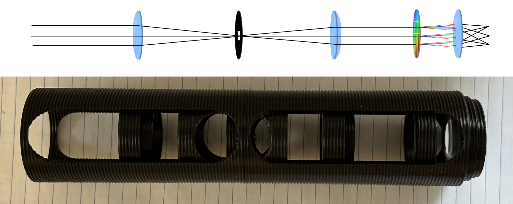

A Simple Visible Light Computed Tomography Imaging Spectrometer
Alex Bock 2022-12-17
Overview
In the visible spectrum, an imaging spectrometer is essentially a camera that collects spectral information for each pixel with a much finer spectral granularity than the broad RGB channels found in a typical color camera. Camera sensors for color photography deliberately mimic the method of color determination used by the three types of color-filtering cone cells in the human retina, collecting data from only three broad and overlapping spectral regions. Such designs are easier to manufacture than a full hyperspectral camera, and with the correct color-processing algorithms they can capture images which mimic human color perception. This includes replicating the indistinguishability of metamers in human vision—a significant limitation.
Metamers are distinct spectral compositions of light that nonetheless are perceived as identical colors. For example, LCD and OLED displays are generally only capable of emitting light where the brightness of fixed red, green, and blue spectral bands is controlled at each pixel. This means that virtually all modern consumer display technologies are actually incapable of individually modulating the emission of any significant quantity of yellow photons. The perception of the color yellow when viewing a color display is produced by emitting both green and red in the correct proportion to trigger the same response in the human eye that it would have if it were observing monochromatic light of a wavelength perceived as yellow. That is to say, neither the human eye nor a standard camera can answer the question: is a banana yellow, or is it just both red and green? Less laconically, to what degree does the perception of yellow when looking at a banana come from it reflecting spectrally yellow light versus combinations of spectrally red and green light? (Looking at a photograph of a banana on a monitor, it is virtually exclusively the latter.)
An Inexpensive Imaging Spectrometer
Computed tomography algorithms applied to an image passed through a diffraction grating provide a way to reconstruct spatial spectral data throughout an image without requiring moving parts or multiple frame captures. To explore this, I built a simple optical assembly for computed tomography imaging spectroscopy which can be mounted on a standard digital camera to capture images for offline analysis. The optical diagram aligned with a photo of the assembled device is shown below:
The threaded tubes and lens holders were 3D-printed. All three converging lenses have identical focal lengths (50 mm), and the field stop is a square to frame the images formed by each diffraction order. The penultimate element is a 2D transmission diffraction grating, essentially equivalent to two standard gratings crossed with their lines perpendicular. This film was cut to shape from a large and inexpensive roll of 13,500 lpi film. The threaded tubes contain windows to allow easily adjusting the position of any of the internal elements from the outside. These windows can be covered with an exterior shroud to block stray light.
Raw Image Data
The following image is a photograph taken with the above assembly attached to a standard digital camera. The subject is an LCD monitor displaying the word "test" in white.
This image demonstrates the centrally emanating grid structure formed by the images of each diffraction order (-2, -1, 0, 1, 2).
The interpretation of the individual images as alternate perspective views of a three-dimensional cube with two spatial axes and one spectral axis is starkly apparent when examining the following image of an alternate test pattern, the letters "abcd" where the letters are white, red, green, and blue respectively:
Reviewing the four diagonal images of the ±1 orders, the projection can be interpreted intuitively as being similar to looking at a row of four buildings of varying heights from different angles, where the progression of color from red to violet is the "height". To gather the desired spectral data, these images must be used to reconstruct a three-dimensional volume that would produce each of the observed projections when seen from the same angle.
Data Processing
The visual interpretation of the two images presented above is significantly aided by the photographs having been taken by a color camera, but in the general case the reconstruction of the hyperspectral volume for this kind of device would be performed without any color data except that contained within the spatially varying brightness of each pixel. That is, to maintain generality to extension to other wavelength ranges and types of non-photographic cameras, the tomographic processing must receive only a monochrome image.
Next time, I'll discuss the implementation of a frequency space reconstruction algorithm for the spatio-spectral cube using the Fourier slice theorem.
Back to Index